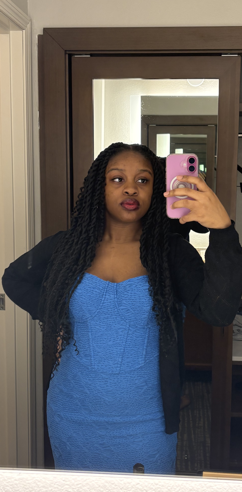

As I begin my journey as an artist, as a media maker, I am still exploring and discovering what direction or form my creativity best takes shape, as well as what motivates me to make art. I am particularly interested in the process behind creating an image. When taking pictures, I enjoy experimenting with lighting and angles to see how small changes can transform what is being viewed. I believe what draws me is the question of how the meaning behind what is presented is built. I enjoy watching TV and movies, but I find that the use of lighting and framing and angles fall below my conscious attention. What I do notice, actively, is the subtleties of relationship and communication, and how that is communicated; who the camera holds on and when, how a face reads in a given moment, the way music can announce what's about to happen before any action confirms it. That gap between what's shown and what's understood is where I think the work of communication takes shape. I want to carry that same attention into my own process of creating. I have interests in drawing, painting, and digital design. I am interested in seeing whether what catches my attention in photography, drawing, painting, and even digital design will inform one another or will stay as single defined methods. Though I am unsure of how this process will present itself in what I create or even what particular format I'll settle on in my art-making, I intend to follow whatever construction of meaning catches my attention and ask, concretely, how it was made.